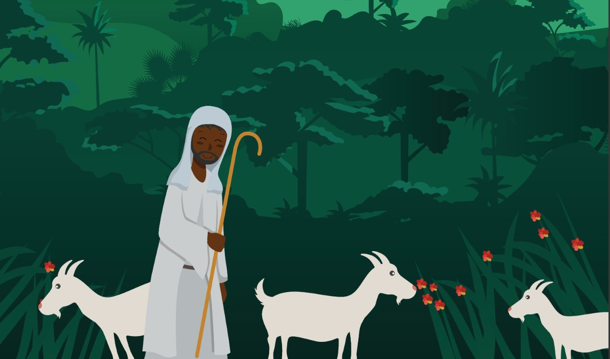
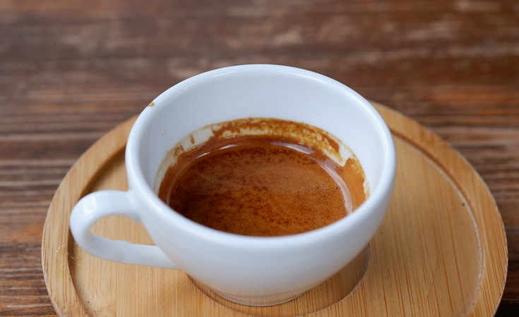

Coffee Junkie

History Coffee
Coffee grown worldwide can trace its heritage back centuries to the ancient coffee forests on the Ethiopian plateau. There, legend says the goat herder Kaldi first discovered the potential of these beloved beans. The story goes that that Kaldi discovered coffee after he noticed that after eating the berries from a certain tree, his goats became so energetic that they did not want to sleep at night. Kaldi reported his findings to the abbot of the local monastery, who made a drink with the berries and found that it kept him alert through the long hours of evening prayer. The abbot shared his discovery with the other monks at the monastery, and knowledge of the energizing berries began to spread. As word moved east and coffee reached the Arabian peninsula, it began a journey which would bring these beans across the globe. DetalisType Coffee

Espresso
Espresso is a concentrated form of coffee served in small, strong shots and is the base for many coffee drinks. It's made from the same beans as coffee but is stronger, thicker, and higher in caffeine. However, because espresso is typically served in smaller servings than coffee, it has less caffeine per serving. Detalis
Cafe Latte
Pretty much all those names are Italian words. Espresso coffee started in Italy which is why you often see signs with the words Italian coffee served here. Even though most people think that those words mean the coffee is from Italy.We can explain most of the meanings of the actual words but we think it is more important to explain the differences. Please know that there is no standard. There is no coffee standards book that needs to be followed. No judge walking around coffee shops handing out penalties for not doing it 'right' Detalis
